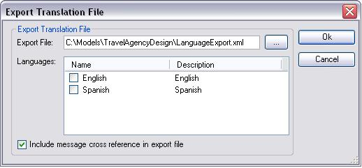

Allows the export of the language object(s) to be translated.  OptionsExport Translation File: Is the name of the distribution file suggested by GeneXus is LanguageExport.xml, that can be changed. You can also specify a path directory to store the export file; otherwise, it is generated in the KB directory by default. Languages: Displays the language objects to be distributed. You will be able to configure other languages by means of check boxes. The presence of languages within the list depends on the languages contained in the KB. Include message cross-references in export file: Allows inclusion of text cross-references in the export file. See AlsoApplication Localization
|